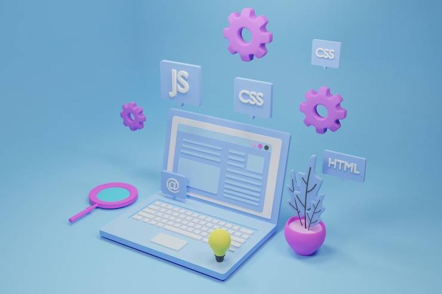

Web-разработка это -
процесс создания сайтов и веб-приложений, который включает дизайн, вёрстку, программирование и настройку серверов.
Направления веб-разработки
Фронтенд (Frontend): Создание клиентской части, то есть интерфейса и всего, что пользователь видит в браузере (используются HTML, CSS, JavaScript).
Бэкенд (Backend): Разработка внутренней серверной логики, баз данных и систем обработки информации, скрытых от глаз пользователя.
Фулстек (Fullstack): Объединение фронтенда и бэкенда; специалисты этого профиля способны создавать проекты целиком.
